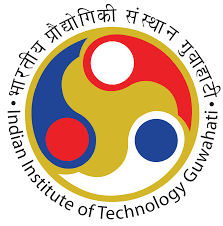

|
 Sonali Tudu
Roll No.: 210107083
B.Tech in Chemical Engineering
Indian Institute of Technology, Guwahati |
Education
| Degree |
Institute/Board |
CGPA/Percentage |
Year |
| B.Tech |
Indian Institute of Technology, Guwahati |
7.5(current) |
2024-Present |
| 12th Grade |
CBSE |
91.6% |
2020 |
| 10th Grade |
CBSE |
95.8% |
2018 |
Experience
Indian Institute of Science, Bangalore // June 2024-July 2024 //
Summer Research Intern, CEIP(Chemical Engineering Internship Program)
-
Studied the effect of shear on permanent dipolar sphere in the presence of rotating magnetic field using MATLAB programming.
- Studied the effect of shear on thin rod (cylinder) in the presence of rotating magnetic field using MATLAB programming.
-
Using MATLAB made animated video showing the tragectories of the particles(sphere and thin rod)in varying field strength showing stablility and also depicting boundry points.
Projects
Seawater Desalination // July 2024- Nov 2024 //
Supervisor Dr. S Senthilmurugan, BTech Project-I(CL 498), IIT Guwahati
- Synthesis of GO (Graphene Oxide) membrane.
- Synthesis of GO based proton permeable membrane.
- Nanotechnology in next generation agriculture // Jan 2024- April 2024 // Presentation
Course Instructor: Prof. Dipankar Bandyopadhyay, Course-CL 625(Fundamentals of micro-nanofluidics & microfabrication), IIT Guwahati.
- Made a pH sensor for measuring pH of soil using semiconductor material ZnO and MXene (solar powered pH sensor).
Technical Skills
- Programming: C/C++, Java, MATLAB
- Skills HTML, CSS, Latex
Key Courses Taken
- Transport Phenomena(CL 305)Heat(CL 202), Mass(CL 202), Fluid(CL 202)
- Mechnaical Operations (CL 208)
- Chemical Reaction Engineering (I) & (II)
- Thermodynamics (CL 208)
- Process Control and Dynamics (CL 303)
- Plant Design and Economics (CL 306)
- Chemical Technology (CL 306)
Position of Responsibility
- Core Team: TechExpo, Techniche, IIT Guwahati. // Nov 2022 - Sept 2023 //
Extra-Curriculum
- Organiser:TechExpo, Techniche, IIT Guwahati. // Nov 2021 - Sept 2022 //
- Organiser:GHM (Guwahati Half Marathon), Techniche, IIT Guwahati. // April 2022 //
- Core Team:GHM (Guwahati Half Marathon), Techniche, IIT Guwahati. // April 2023 //
Achievements
- Best Project,CEIP, IISc, Banglore.// July 2024 //